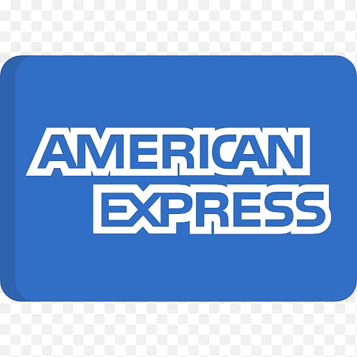

“It’s the most lonely thing I’ve ever done in my entire life. You don’t get it unless you’ve been through it.”
Katie · 35 · IVF & surrogacy

Founder

Founder & CEO
CHIEF EXPERIENCE OFFICER AT TALKSPACE
Led customer experience overhaul during Talkspace IPO in peak Covid.
VP MARKETING AT SONDERMIND
Owned $35M budget, 10-person team. Series C General Catalyst-backed digital mental health platform.
EX-AMAZON
4.5 years as L6 product management & marketing leader across Amazon Fashion (B2C), Amazon Music (B2C), Amazon Advertising (B2B).
3X EGG FREEZE
Personal lived experience at CCRM Fertility and Spring Fertility.



Market
$122B
By 2030, growing 14.5% a year. Up from $47B today.
Precision Business Insights, 2024
$97B
By 2030, growing 16.4% a year. Fastest-growing category in digital health.
Grand View Research, 2024
$15B+
Private capital deployed into fertility since 2020.
The category is real.
PitchBook · Crunchbase, 2024
$15K+
Out of pocket costs per egg-freezing cycle. Many women complete 2–4 rounds. A demographic that pays — and is paying.
Now is the moment to redesign the fertility patient experience
for the AI era
Thesis
Voice of the patient
“It’s the most lonely thing I’ve ever done in my entire life. You don’t get it unless you’ve been through it.”
Katie · 35 · IVF & surrogacy
“I wish I had known how many eggs I’d have at 30 versus 35. I could have done one round at 30 and gotten all the eggs I’d ever need.”
Maia · 39 · Egg freezing
“Is there one person who’s looking at me from start to finish?”
Nour · 39 · Egg freezing
Verbatim quotes from 30 patient interviews across NYU Langone, Weill Cornell, Spring Fertility, CCRM, Kindbody, Shady Grove & RMA.
Competitive landscape
Maven
$425M
Total raised · $1.7B val
Carrot
$115M
Total raised · Series C
Modern Fertility
$225M
Acquired by Ro · 2021
Progyny
$1.17B
FY2024 revenue · public
Kindbody
$300M+
Total raised · clinic network
Funding sources: Crunchbase · PitchBook · company press (current as of 2026).
Competitive landscape
Maven
$425M
Carrot
$115M
Modern Fertility
$225M exit
Progyny
$1.17B rev
Kindbody
$300M+
Competitive landscape
| Scale | Pre- decision "Should I freeze?" |
During treatment |
Post- treatment |
Curated community moderated, clinical |
AI- native |
||
|---|---|---|---|---|---|---|---|
| Carousel | Pre-seed | ||||||
Funded incumbents |
Maven Care navigation, employer-paid |
$425M · $1.7B val | |||||
| Carrot Fertility benefits, employer-paid |
$115M · Series C | ||||||
| Progyny Public · fertility benefits mgmt |
$1.17B FY24 rev | ||||||
| Kindbody · Spring Fertility Clinic networks |
$300M+ · $200M+ | ||||||
Direct competitors IVF-leaning |
Frame D2C concierge + community, IVF-focused |
Seed | |||||
| Conceive D2C membership + RMA partnership |
Seed | ||||||
| Berry Fertility Cycle monitoring, no VC backing |
Bootstrapped | ||||||
Episodic content & community |
Modern Fertility (Ro) At-home hormone testing |
$225M acq. | |||||
| Reddit · Rescripted · Stix Forums, content, D2C testing |
— | ||||||
| ChatGPT · Perplexity Generic LLMs, no continuity |
— | ||||||
Adjacent |
Flo · Natural Cycles · Inito · Mira Cycle / ovulation / hormone tracking — not fertility-treatment |
$200M+ combined |
full capability · partial
Introducing Carousel
We meet her before the clinic. We hold her throughout active treatment. We support her after.
01 · Education
No more asking ChatGPT or interpreting AMH levels through TikTok. Trustworthy, credible, personal.
02 · Community
Goodbye Reddit threads and Facebook groups. Moderated, curated, matched to her stage.
03 · Emotional Support
Through fear, anxiety, isolation, disappointment, hormones — an AI-powered companion that holds.
Wedge
The wedge: D2C
Acute need lives Before and During treatment. She is willing to pay out of pocket today.
Every other player serves the buyer (employer, clinic, embryologist). We serve the patient first — and the consumer demand we generate becomes the asset clinics and employers will pay to access.
Why now, why us
Business model
Year 1 · in parallel
01
Direct-to-consumer
She pays Carousel.
Subscription. Wedge into Before and During — where acute need is highest. Generates the demand signal clinics will pay for.
02
Clinic SaaS
Clinics license Carousel.
Patient experience is the only growth lever clinics haven’t pulled — they spend <1% of revenue on it. We bring acquisition, retention & ops lift.
Year 3+ · activates as platform matures
03
Employer benefits
Employers pay $10 PEPM.
86% of companies plan to offer family-forming benefits in 2025. Progyny’s $1.17B FY24 revenue is the proof. We deliver the patient layer the benefit doesn’t.
The flywheel
Traction
Sequenced milestones. Angel buys credibility. Pre-Seed buys validation. Series A buys scale.
Today
Signal
Months 0–6 · this round
Cold-start
Months 6–18 · follow-on
Validation
Months 18–24 · Series A
Scale
Ask
Round
Pre-Seed · SAFE
Check sizes
$25K – $250K
Use of funds
MVP build · clinical co-founder · advisory
Follow-on
Series A in 18–24 months
What this round buys
sarah@carouselfertility.com · www.carouselfertility.com